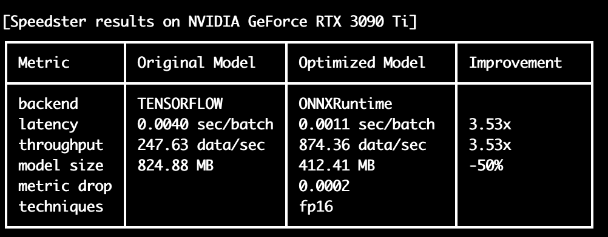

Getting started with TensorFlow optimization
In this section, we will learn about the 4 main steps needed to optimize TensorFlow models:
- Input your model and data
- Run the optimization
- Save your optimized model
- Load and run your optimized model in production
1) Input model and data
Info
In order to optimize a model with Speedster, first you should input the model you want to optimize and load some sample data that will be needed to test the optimization performances (latency, throughput, accuracy loss, etc).
For TensorFlow models we support two types of input data:
- Custom data format
- TensorFlow DataLoader
Input data is a List[Tuple[Tuple[tensor, ...], tensor]]
- Each element of the list is a tuple, which represents a batch of the dataset.
- In each tuple, the first element is another tuple containing a value for each input tensor of the model, while the second element is a tensor containing the labels of that batch of data. The label is optional, so it can be omitted.
import tensorflow as tf
from tensorflow.keras.applications.resnet50 import ResNet50
# Load a resnet as example
model = ResNet50()
# Provide input data for the model
input_data = [((tf.random.normal([1, 224, 224, 3]),), tf.constant([0])) for _ in range(100)]
Now your input model and data are ready, you can move on to Run the optimization section 🚀.
We support the following DataLoader types:
- Tensor only
- Tensor and labels
For models with multiple inputs, we support the following types:
- input_1, input_2, ..., input_n, label
- (input_1, input_2, ..., input_n), label
import torch
import torchvision.models as models
# Load a resnet as example
model = models.resnet50()
# Use your TensorFlow DataLoader in any of the standard format
input_data = <insert your TensorFlow DataLoader here>
Now your input model and input_data are ready, you can move on to the Run the optimization section.
2) Run the optimization
Once the model and input_data have been defined, everything is ready to use Speedster's optimize_model function to optimize your model.
The function takes the following arguments as inputs:
model: model to be optimized in your preferred framework (TensorFlow in this case)input_data: sample data needed to test the optimization performances (latency, throughput, accuracy loss, etc)optimization_time: if "constrained" mode,Speedstertakes advantage only of compilers and precision reduction techniques, such as quantization. "unconstrained" optimization_time allows it to exploit more time-consuming techniques, such as pruning and distillationmetric_drop_ths: maximum drop in your preferred accuracy metric that you are willing to trade to gain in acceleration
and returns the accelerated version of your model 🚀.
from speedster import optimize_model
# Run Speedster optimization
optimized_model = optimize_model(
model,
input_data=input_data,
optimization_time="constrained",
metric_drop_ths=0.05
)
Internally, Speedster tries to use all the compilers and optimization techniques at its disposal along the software to hardware stack to optimize the model. From these, it will choose the ones with the lowest latency on the specific hardware.
At the end of the optimization, you are going to see the results in a summary table like the following:

If the speedup you obtained is good enough for your application, you can move to the Save your optimized model section to save your model and use it in production.
If you want to squeeze out even more acceleration out of the model, please see the optimize_model API section. Consider if in your application you can trade off a little accuracy for much higher performance and use the metric, metric_drop_ths and optimization_time arguments accordingly.
3) Save your optimized model
After accelerating the model, it can be saved using the save_model function:
Now you are all set to use your optimized model in production. To explore how to do it, see the Load and run your optimized model in production section.
4) Load and run your optimized model in production
Once the optimized model has been saved, it can be loaded with the load_model function:
The optimized model can be used for accelerated inference in the same way as the original model:
# Use the accelerated version of your TensorFlow model in production
output = optimized_model(input_sample)
Info
The first 1-2 inferences could be a bit slower than expected because some compilers still perform some optimizations during the first iterations. After this warm-up time, the next ones will be faster than ever.
If you want to know more about how to squeeze out more performances from your models, please visit the Advanced options section.